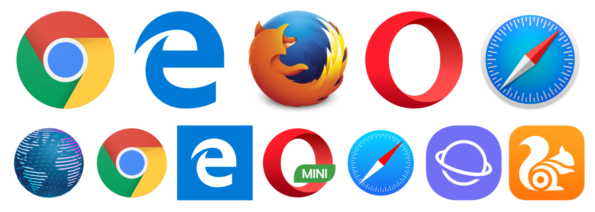
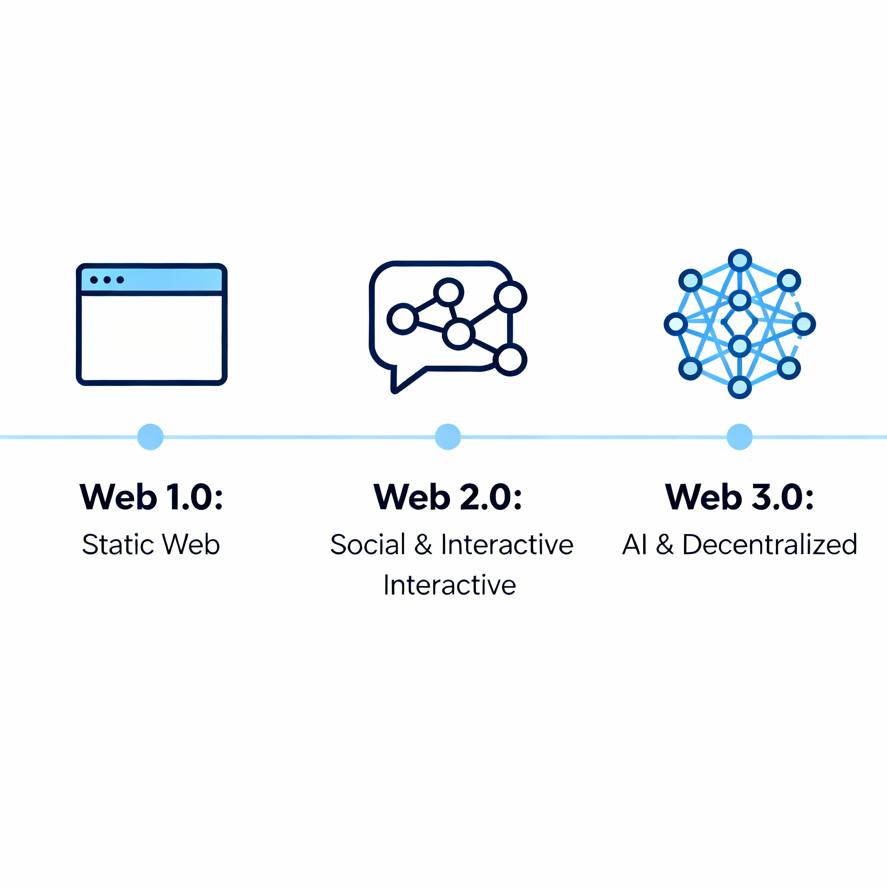

Web Application Development
CSC13008-23KTPM1
Note 02 - Internet and Web
Lecturer: Đỗ Nguyên Kha
Semester 1/2025-2026 @ FIT-HCMUS
Content
- Internet
- Web
- HTTP
- HTML/JS/CSS
- Web browser
- Web server
Internet
- The Internet is the global system of interconnected computer networks that uses the Internet protocol suite (TCP/IP) to communicate between networks and devices
- It is a network of networks that comprises private, public, academic, business, and government networks of local to global scope, linked by electronic, wireless, and optical networking technologies
Internet
- The Internet carries a vast range of information services and resources, such as the interlinked hypertext documents and applications of the World Wide Web (WWW), electronic mail, internet telephony, streaming media and file sharing
- Read more: Internet
Internet
Web
- The World Wide Web (also known as WWW, W3, or simply the Web) is an information system that enables content sharing over the Internet through user-friendly. It allows documents and other web resources to be accessed over the Internet according to specific rules of the Hypertext Transfer Protocol (HTTP).
Web

Web vs Internet
The concepts of the Internet and the Web are often confused with each other. However, the Web is only a part of the Internet; there are many other components of the Internet such as Email, VoIP (Voice-over-Internet Protocol), FTP (File Transfer Protocol), Streaming media (transmission of audio and video), and more...
HTTP
Hypertext Transfer Protocol is the foundational communication protocol used on the World Wide Web. It defines how messages are formatted and transmitted between web browsers (clients) and web servers, and how web servers respond to requests.
HTTPS
Hypertext Transfer Protocol Secure is the secure version of HTTP. It uses encryption protocols such as TLS (Transport Layer Security) or SSL (Secure Sockets Layer) to secure data transmitted between a web browser and a web server
HTML
Hypertext Markup Language is the standard markup language used to create and structure web pages and web applications. It defines the elements and structure of content on the web, such as headings, paragraphs, links, images, and multimedia.
Bold
will render
Bold
HTML
- Section 1
- Section 2
- Section 3
will render
- Section 1
- Section 2
- Section 3
HTML
Column 1
Column 2
Column 4
Column 4
Row 1
A
B
C
Row 2
A
B
C
Row 3
A
B
C
HTML
will render
| Column 1 | Column 2 | Column 4 | Column 4 |
|---|---|---|---|
| Row 1 | A | B | C |
| Row 2 | A | B | C |
| Row 3 | A | B | C |
Web browser
A web browser is a software application used to access and display content on the World Wide Web. It retrieves web pages from web servers and renders them for users to interact with. Common web browsers are: Chrome, Firefox, Safari, Edge, Opera...  Source: http://mediatemple.net/blog/tips/browser-statistics-matter/
URL
Uniform Resource Locator is the address used to identify and locate resources on the Internet, such as web pages, images, videos, and files.
scheme:[//[user[:password]@]host[:port]][/path][?query][#fragment]
https://www.google.com/flights/
Hyperlink
A hyperlink, often simply called a link, is a reference in a hypertext document that users can click to navigate to another document or resource. It forms the fundamental building block of web navigation.
Google Flights
Google Flights
CSS
Cascading Style Sheets is a stylesheet language used to describe the presentation and formatting of a document written in HTML
#mark {
/* Red */
color: #ff0000;
font-weight: bold;
font-family: 'Arial';
}
Mark this part
Mark this part
CSS
CSS can be put in style tag
CSS
... or inline HTML tag
Đánh dấu chỗ này
JavaScript
JavaScript is a programming language commonly used in web browsers to create interactive and dynamic content on web pages.. Example:
JavaScript
Similar to CSS, JavaScript can be put inline HTML tag
<script>alert('Hello world!');</script>
<script src="js/app.js"></script>
Dynamic Web
A dynamic web page is a web page whose content is generated in real-time, often customized for each user, rather than being fixed (static). Dynamic web pages are fundamental to modern websites and web applications, providing flexibility and interactivity.
Dynamic web
Dynamic web is usually built using popular programming languages as well as popular web frameworks:- C#, VB.net: ASP.net (Core)...
- PHP: Laravel, Zend, Yii, Slim...
- Java: Spring, Play...
- Ruby: Rails...
- Python: Django...
- JavaScript: Express, Connect, Restify...
Web generations
- Web 1.0: The static web with read-only pages, mostly informational and no user interaction (early 1990s to early 2000s).
- Web 2.0: The social and interactive web with user-generated content, social media, and dynamic experiences (mid-2000s to 2010s).
- Web 3.0: The semantic and decentralized web, focusing on AI, personalization, linked data, and blockchain (2010s to present).
Web generations

Web server
- Hardware: It is a computer that hosts a website with an IP address on the Internet, accessible from anywhere in the world.
- Software: It is a program running on a computer at port 80 (HTTP), port 443 (HTTPS), or other ports to provide information (web pages).
Web server
A simple web server contains HTML files (static web) or executes scripts/source code to generate HTML (dynamic web). Popular web servers include IIS, Apache, nginx, Tomcat...
Individual Assignment - IA01
- Survey free hosting services that support Node.js
- Register an account
- Fill in the host information in the report: username/email, spec, public link, screenshot...
- Scoring: 3.5 points for each successfully registered host